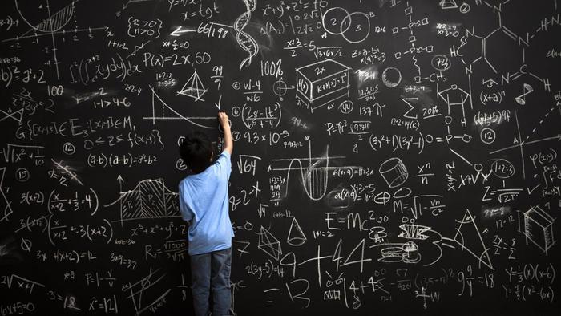

Информатика
Алгоритмы
Алгори́тм — набор инструкций, описывающих порядок действий исполнителя для достижения некоторого результата. В старой трактовке вместо слова «порядок» использовалось слово «последовательность», но по мере развития параллельности в работе компьютеров слово «последовательность» стали заменять более общим словом «порядок». Независимые инструкции могут выполняться в произвольном порядке, параллельно, если это позволяют используемые исполнители.
Ранее в русском языке писали «алгорифм», сейчас такое написание используется редко, но, тем не менее, имеет место исключение (нормальный алгорифм Маркова). Часто в качестве исполнителя выступает компьютер, но понятие алгоритма необязательно относится к компьютерным программам, так, например, чётко описанный рецепт приготовления блюда также является алгоритмом, в таком случае исполнителем является человек (а может быть и некоторый механизм, ткацкий станок, и пр.).
Слово «математика» произошло от др.-греч. μάθημα, что означает изучение, знание, наука, и др.-греч. μαθηματικός, первоначально означающего восприимчивый, успевающий, позднее относящийся к изучению, впоследствии относящийся к математике. В частности, μαθηματικὴ τέχνη, на латыни ars mathematica, означает искусство математики. Термин др.-греч. μᾰθημᾰτικά в современном значении этого слова «математика» встречается уже в трудах Аристотеля (IV век до н. э.). По мнению Фасмера в русский язык слово пришло либо через польск. matematyka, либо через лат. mathematica. В текстах на русском языке слово «математика» или «маѳематика» встречается, по крайней мере, с XVII века, например, у Николая Спафария в «Книге избранной вкратце о девяти мусах и о седмих свободных художествах» (1672 год).
- Математический анализ
- Алгебра
- Аналитическая геометрия
- Линейная алгебра и геометрия
- Дискретная математика
- Математическая логика
- Математичсекая статистика и т.д.
Академиком А. Н. Колмогоровым предложена такая структура истории математики:
- Период зарождения математики, на протяжении которого был накоплен достаточно большой фактический материал;
- Период элементарной математики, начинающийся в VI—V веках до н. э. и завершающийся в конце XVI века
- Период математики переменных величин, охватывающий XVII—XVIII века, «который можно условно назвать также периодом „высшей математики“»;
- Период современной математики — математики XIX—XX века, в ходе которого математикам пришлось «отнестись к процессу расширения предмета математических исследований сознательно, поставив перед собой задачу систематического изучения с достаточно общей точки зрения возможных типов количественных отношений и пространственных форм».
Развитие математики началось вместе с тем, как человек стал использовать абстракции сколько-нибудь высокого уровня. Простая абстракция — числа; осмысление того, что два яблока и два апельсина, несмотря на все их различия, имеют что-то общее, а именно занимают обе руки одного человека, — качественное достижение мышления человека. Кроме того, что древние люди узнали, как считать конкретные объекты, они также поняли, как вычислять и абстрактные количества, такие, как время: дни, сезоны, года. Из элементарного счёта естественным образом начала развиваться арифметика: сложение, вычитание, умножение и деление чисел. Развитие математики опирается на письменность и умение записывать числа. Наверно, древние люди сначала выражали количество путём рисования чёрточек на земле или выцарапывали их на древесине. Древние инки, не имея иной системы письменности, представляли и сохраняли числовые данные, используя сложную систему верёвочных узлов, так называемые кипу. Существовало множество различных систем счисления. Первые известные записи чисел были найдены в папирусе Ахмеса, созданном египтянами Среднего царства. Индская цивилизация разработала современную десятичную систему счисления, включающую концепцию нуля. Исторически основные математические дисциплины появились под воздействием необходимости вести расчёты в коммерческой сфере, при измерении земель и для предсказания астрономических явлений и, позже, для решения новых физических задач. Каждая из этих сфер играет большую роль в широком развитии математики, заключающемся в изучении структур, пространств и изменений.